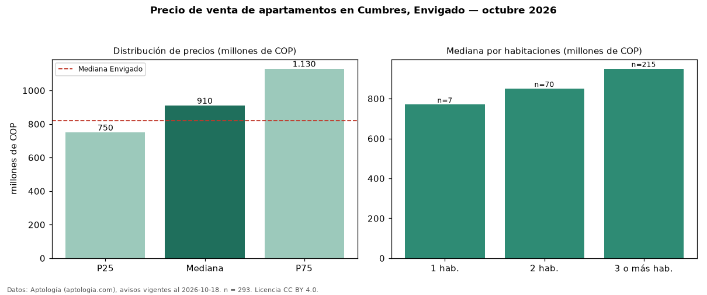

Precio de venta de apartamentos en Cumbres, Envigado — octubre 2026
COP 910 millones es el precio mediano de apartamentos en venta en Cumbres, Envigado (n = 293 avisos). Eso es 11 % por encima de la mediana de Envigado para apartamentos (COP 820 millones). Por metro cuadrado, la mediana es COP 8,83 millones/m² (n = 292 avisos con área), 4 % por encima de Envigado (COP 8,45 millones/m²). Con el precio por m² de arriendo del mismo segmento (COP 49.587/m² al mes), la rentabilidad bruta implícita es 6,7 % anual (aproximación con medianas de ofertas distintas). El área mediana anunciada es 103 m². El segmento con más oferta es el de 3 o más habitaciones (215 avisos, mediana COP 950 millones); pasar de 1 habitación a 3 o más habitaciones cambia la mediana +23 %. La administración mediana declarada es COP 639.500 al mes (n = 190). Por precio mediano es el puesto 12 de 37 barrios de Envigado con al menos 30 avisos de apartamentos en venta (COP): en la franja media. Datos: Aptología (aptologia.com), CC BY 4.0 — https://www.aptologia.com/venta/envigado/cumbres. Archivos: PDF, CSV con las cifras y gráfica PNG.

| Avisos únicos | 293 |
|---|---|
| Percentil 25 | COP 750.000.000 |
| Mediana | COP 910.000.000 |
| Percentil 75 | COP 1.130.000.000 |
| Mediana por m² | COP 8.825.827 |
Fuente: avisos vigentes de portales inmobiliarios recopilados por Aptología, deduplicados (mínimo 30 avisos únicos por celda). Precios pedidos, no cerrados. Fecha: 2026-10-18.